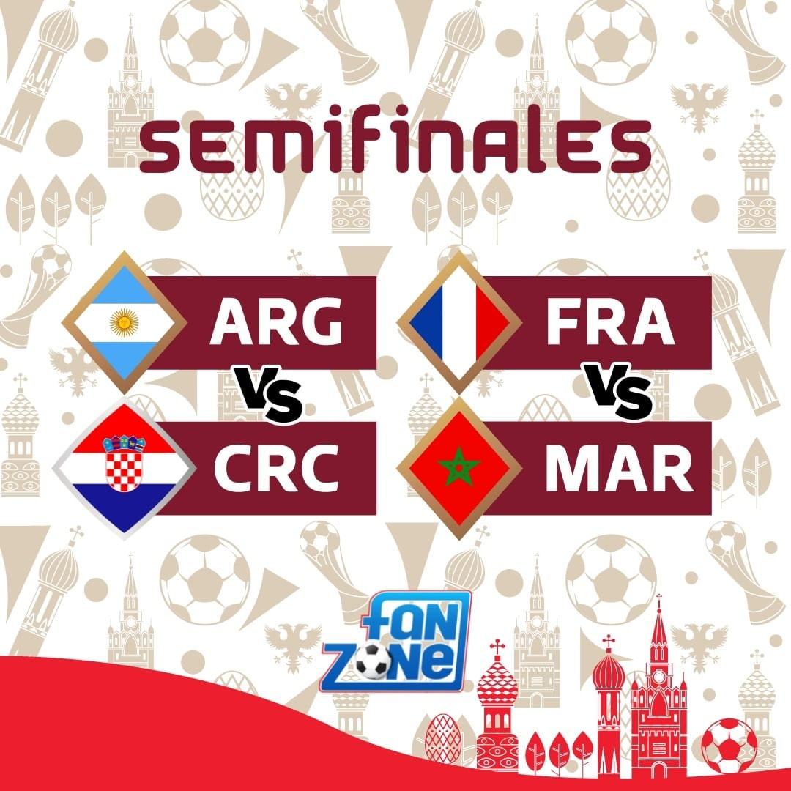

FIFA World Cup Qatar 2022
La Copa Mundial de Fútbol de la FIFA Qatar 2022 es la vigésimo segunda edición de la Copa Mundial de Fútbol organizada por la FIFA. Se está desarrollando desde el 20 de noviembre al 18 de diciembre en Qatar
Fixture (8vos a Semis)
Mejores cuatro países (semifinalistas)
| Bandera | País |
|---|---|

|
Argentina |

|
Croacia |

|
Francia |

|
Marruecos |
Semifinales (Imagen como mapa de links)
Hacer click en el partido que desea ver para redirigirse a los resultados.
